Motivated Digital Product Designer that enjoys to juggle code.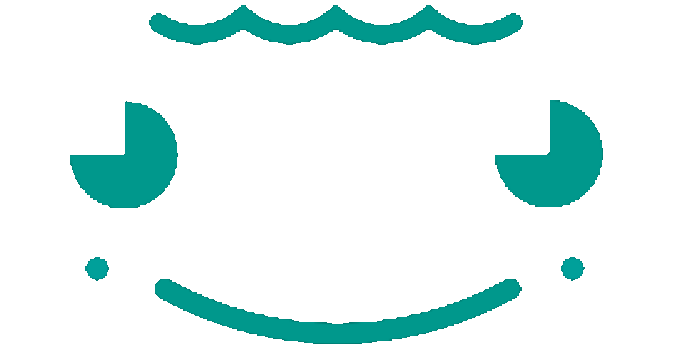
With a background in human-computer-interaction and industrial design I strive to make products and services more valuable and enjoyable for all of us. I have fun doing what I do, especially when the team is satified.
Selected Work
Project
Casavi Customer Application
Role
Responsible UX Designer
Date
20.10.2020
Description
Redesign of the Casavi Customer Application provides a plattform for handling property specific tickets and documents.
The Casavi Tenant App enables tenants and property owners to handle maintenance tickets, documents and other services belonging to house communities. It serves as a connection point between property managers and the people in the house. Major features were already implemented but in the need for a general redesign.
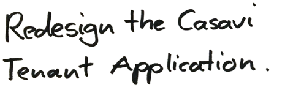
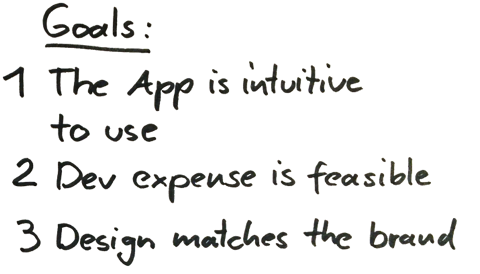
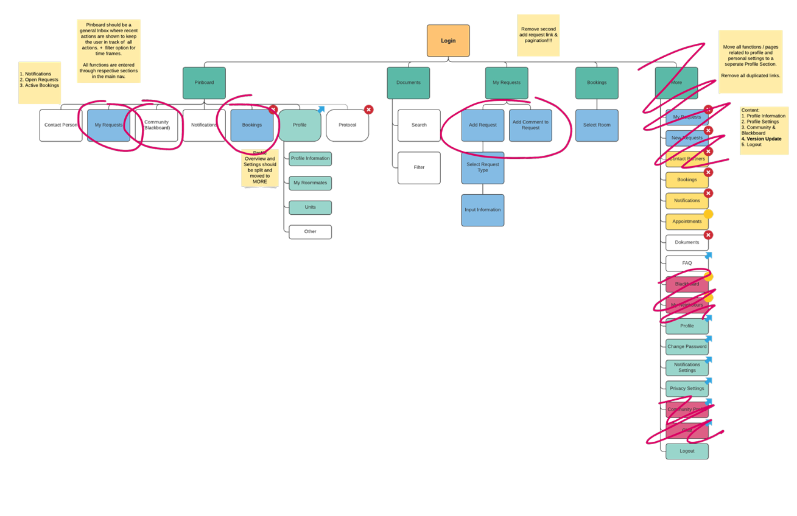
As a first step the existing architecture was discussed. We decided to remove some unnecessary features and bundle others where expected.
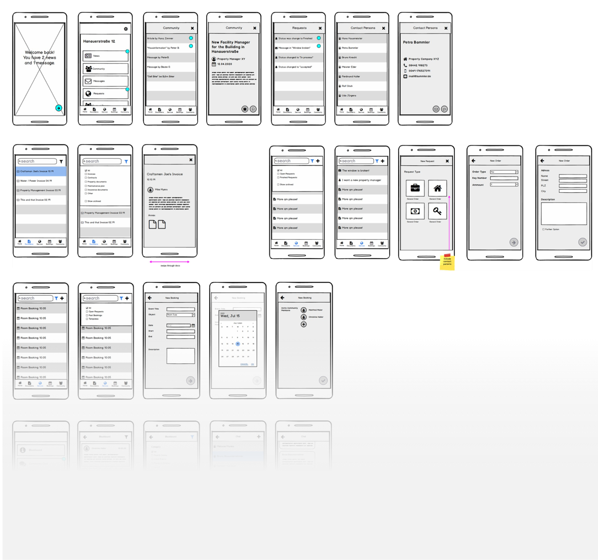
A set of wireframes was developed which served as basis for the later iterations. The team decided on a layout and distribution of functions.
The UI was designed to fit both Android and IOS devices as the user group was nearly evenly distributed among these systems. Elements are designed along material design guidelines.
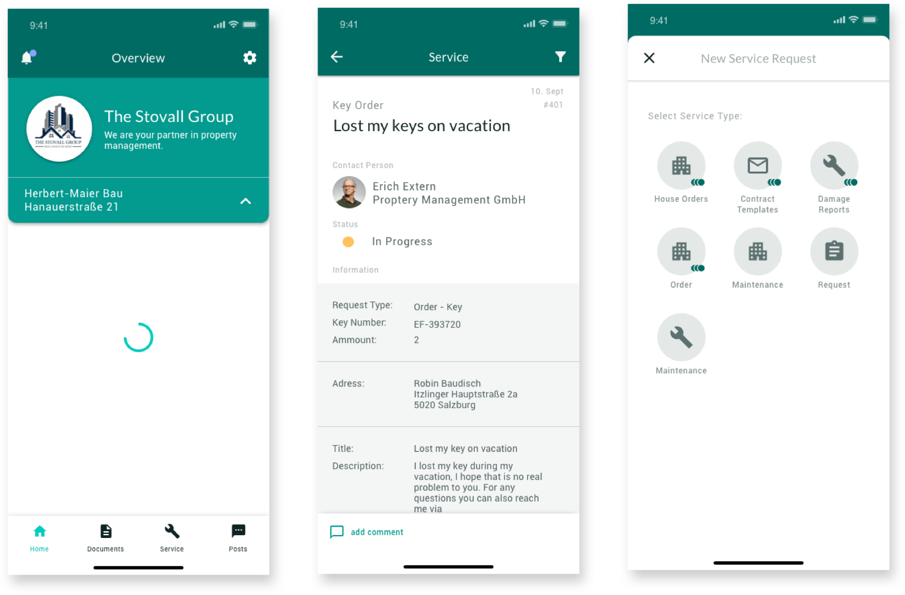
As some components should be branded for customers we decided to go for an atomic design approach. This enables best flexibility within the design system.
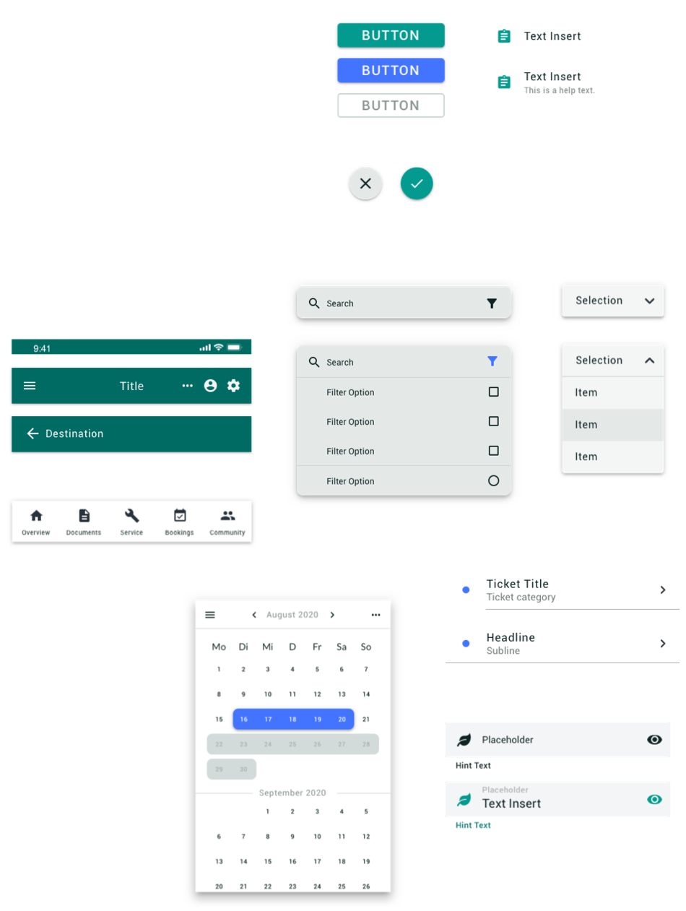
Project
Research Project / Visually Impaired Grocery Shopping
Role
Designer & Project Lead
Date
30.08.2020
Description
In depth field research in the area of visually impaired grocery shopping.
Individual grocery shopping is still frustrating and time
demanding for visually impaired people. A lot of uncertainties
are involved to this action, such as navigation to the market,
finding specific products or reaching out for help to strangers.
With this research we aimed to explore the possibilities of how to improve this process.
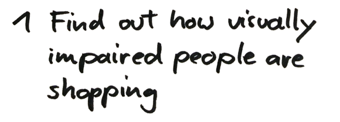
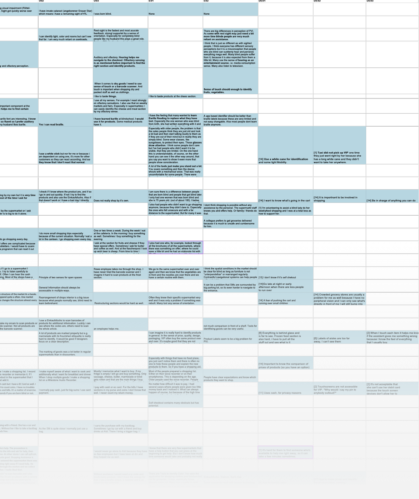
Due to the fact that the project happened while the Covid-19 lockdown the study had to be executed in a remote matter. A row of semi-structured interviews with visually impaired people as well as experts in the field were conducted.
Results showed that there is still a big demand for optimization. Because of the fact that visually impaired persons make up a rather small user group supermarkets often don’t adapt to that.
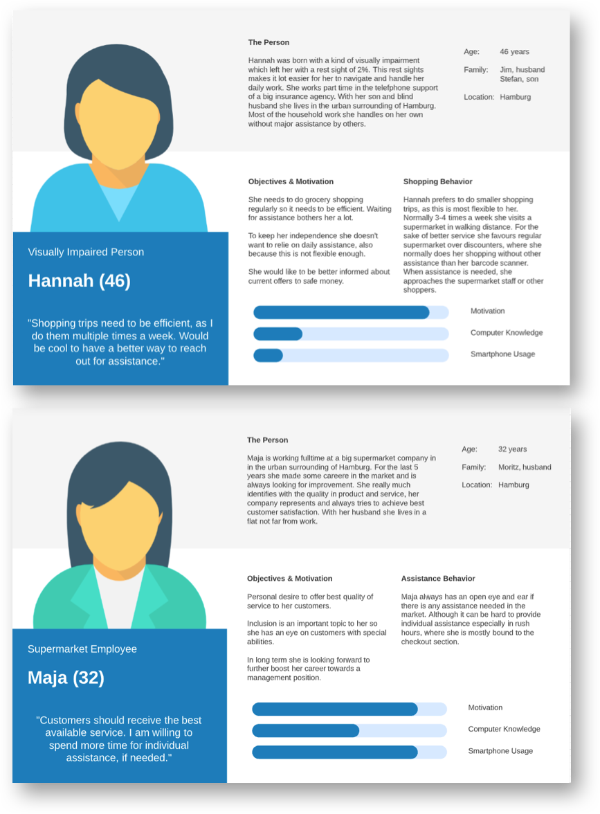
Two personas were constructed grounding on the study results. Describing each the visually impaired shopper and assistant.
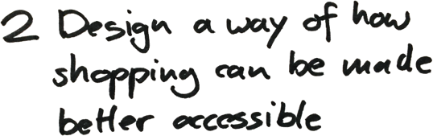
Along the findings of the interviews we designed a user journey of how tangibles can help to reach out for assistance before and while the shopping process.
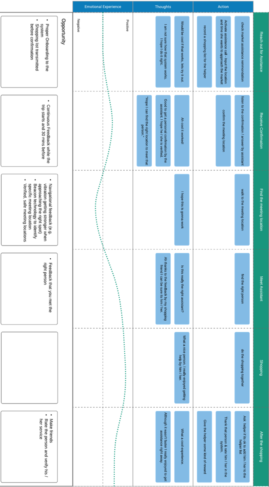
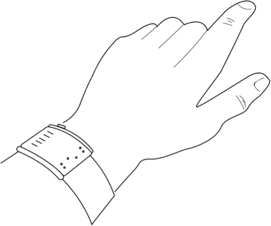
We proposed a concept of seamless assistance requesting as a possible solution to a better future shopping experience. Central thought was to give non smarthone familiar users the option to request directly via a tangible device.
The Wearable is mainly controlled with the input of two buttons on the device as well as voice control for text input.
Project
Media device for seniors
Role
Designer
Date
20.06.2019
Description
Design of a device to encourage the use of media among an aging society.
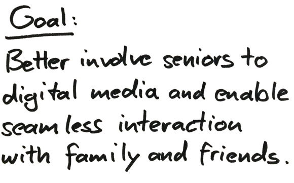
In an aging society it is more important then ever to involve elderly people to our strongly digital society. This is not just important in the sense of an equal right to be part but rather a big factor influencing the mental and physical health of individuals. With bridge I designed a device that is specially tailored for those users. It not just provides a understandable interface but also a hardware that allows for stong physical feedback and interaction.
A central consideration of the concept was that this special use-case would demand a unique hardware to make it usable.
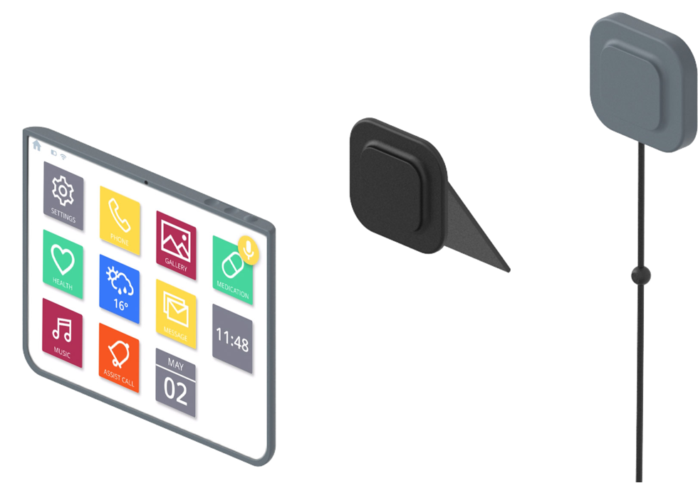
The device combines a tablet with ergonomic properties as well as an emergency button. A on-desk or wall-mounted adapter allows for multiple use scenarios.
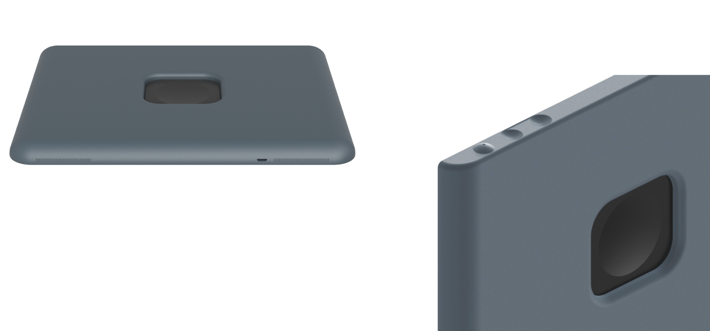
Buttons are shaped in a task-specific matter to enable fast recogniation without the need for visual aid.
The interface is built by principles already known by its users, which are mostly adaped from the physical space.
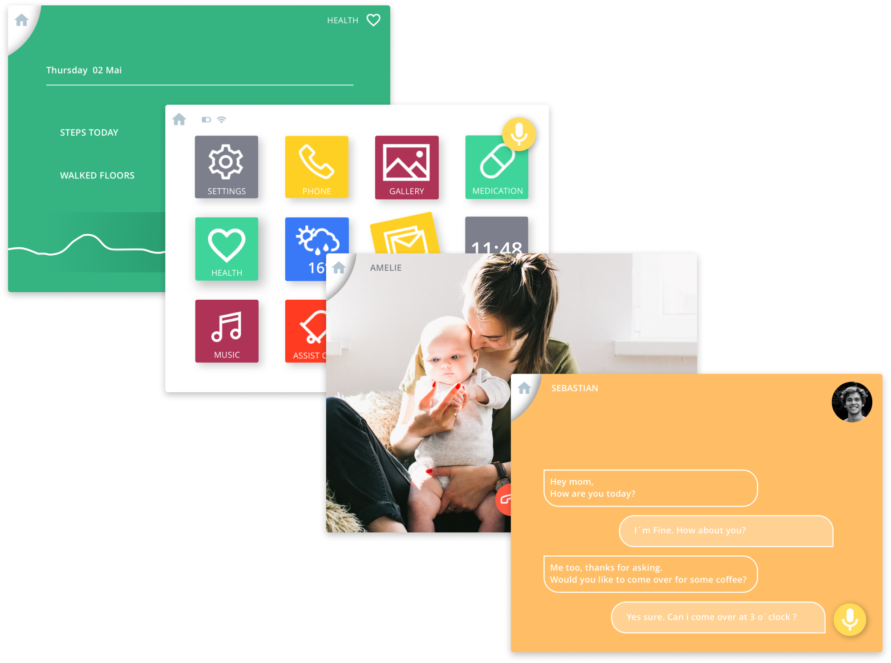
A unique set of icons builds the main screen. Icons show activity via movement. This optimally tracks the attention of users.
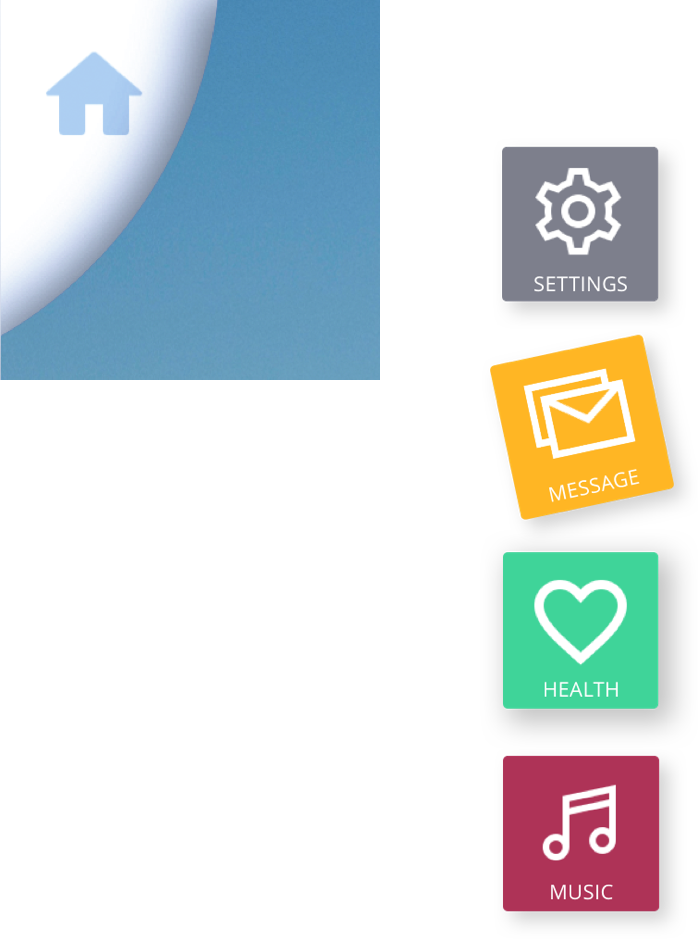
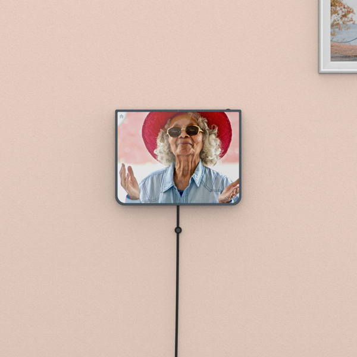
This is how bridge device could be envolved in the context, weather on the wall or on the table.